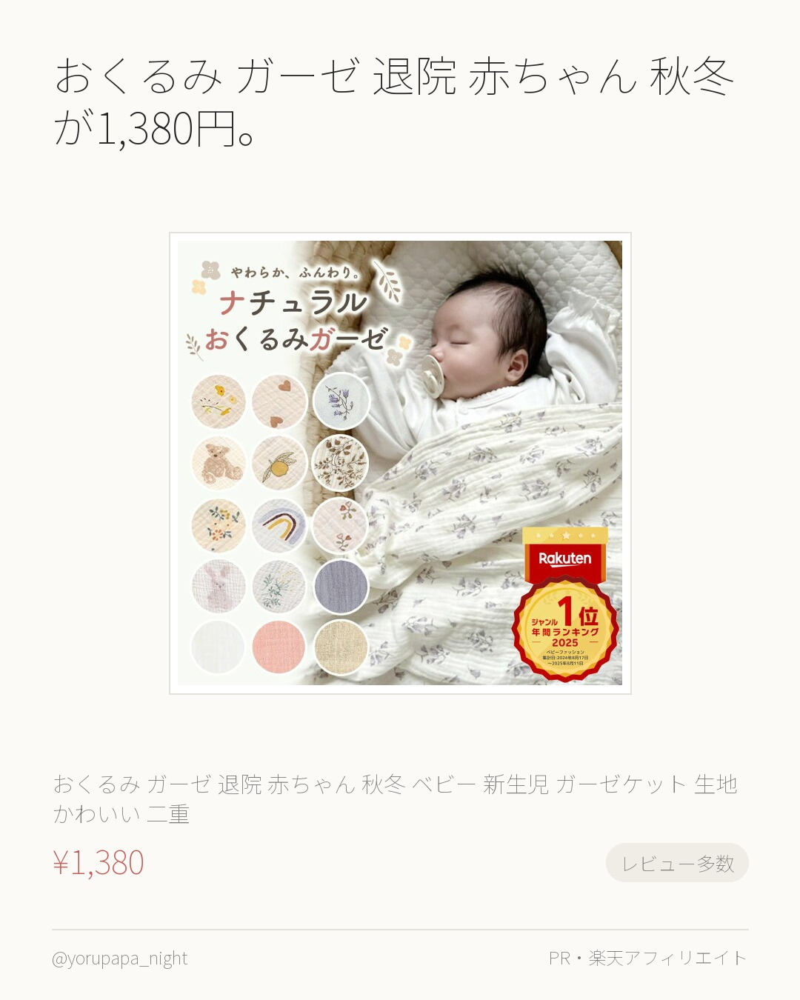
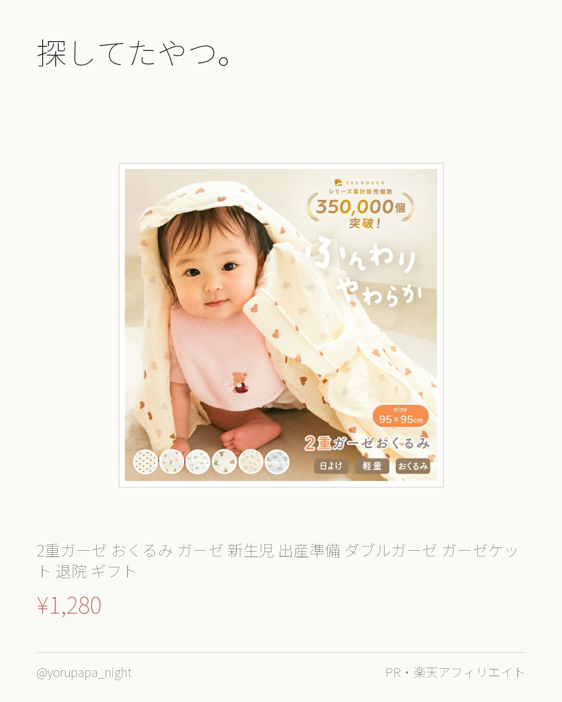
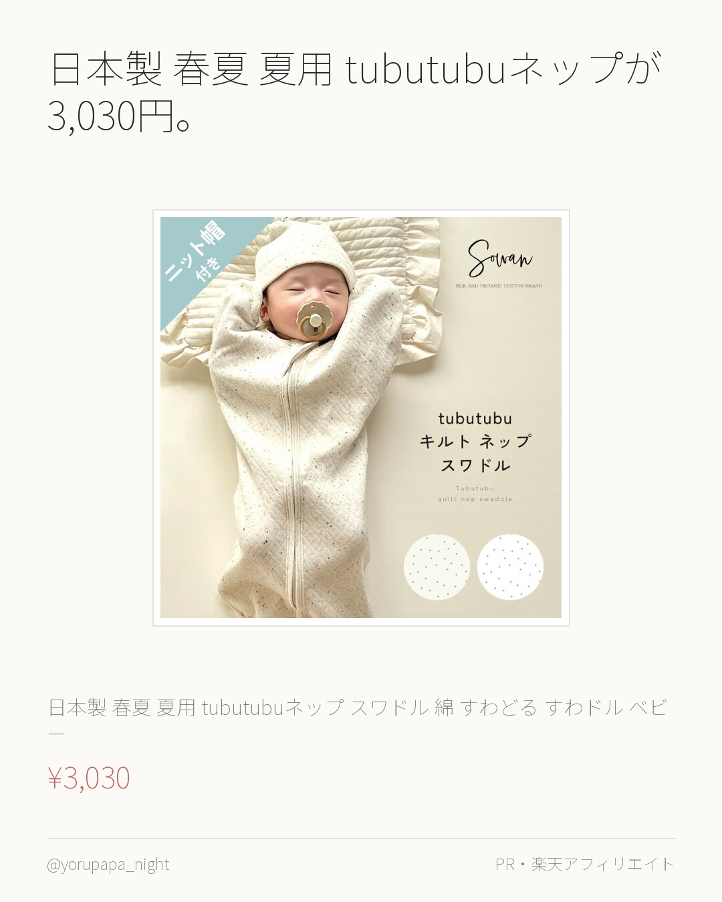
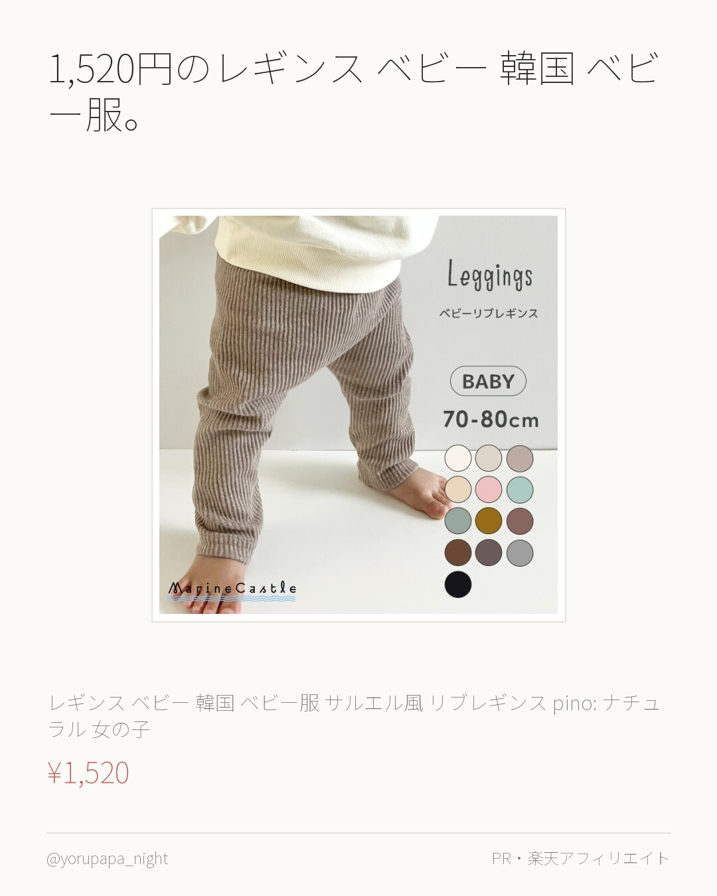
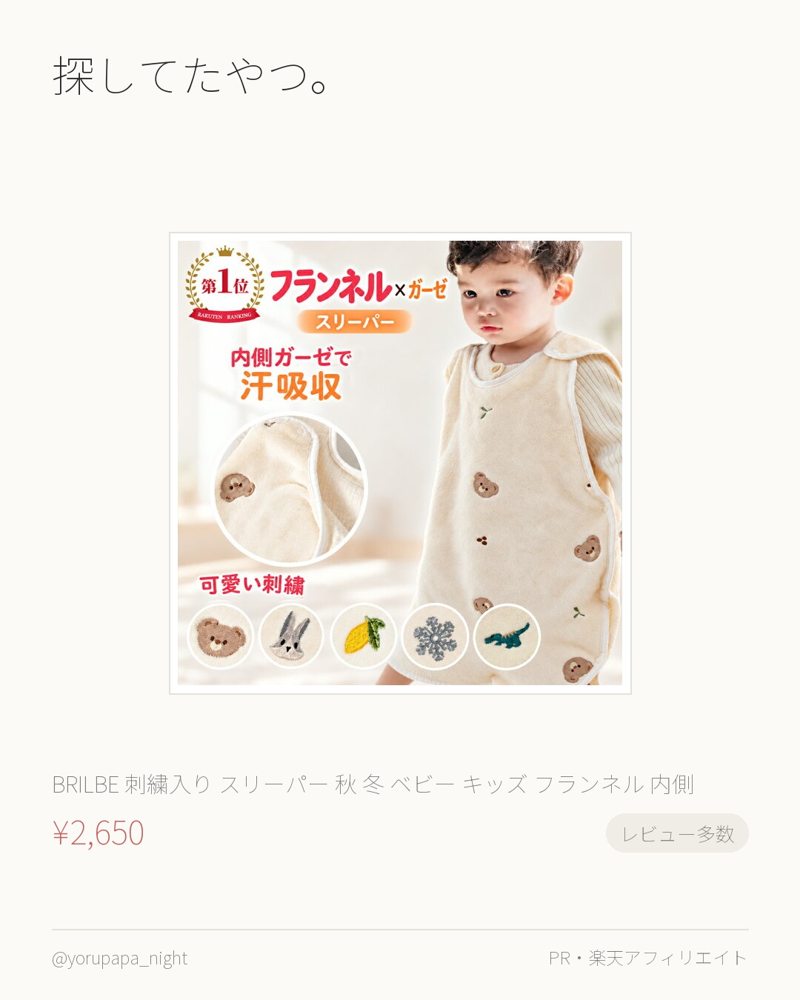
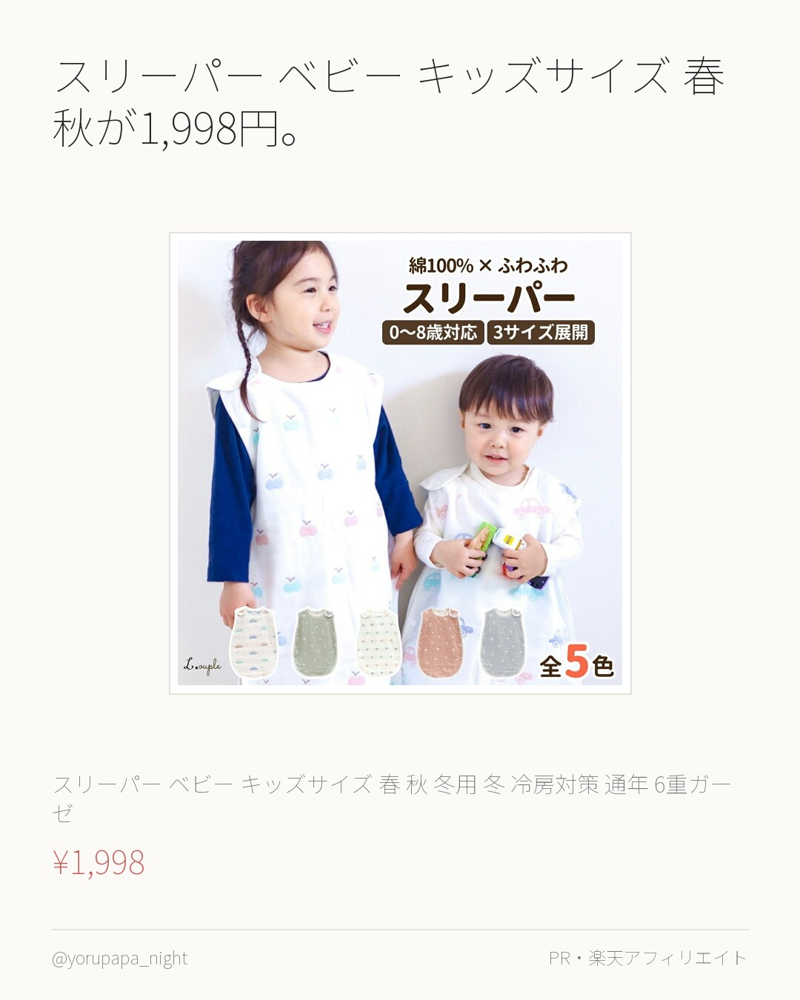
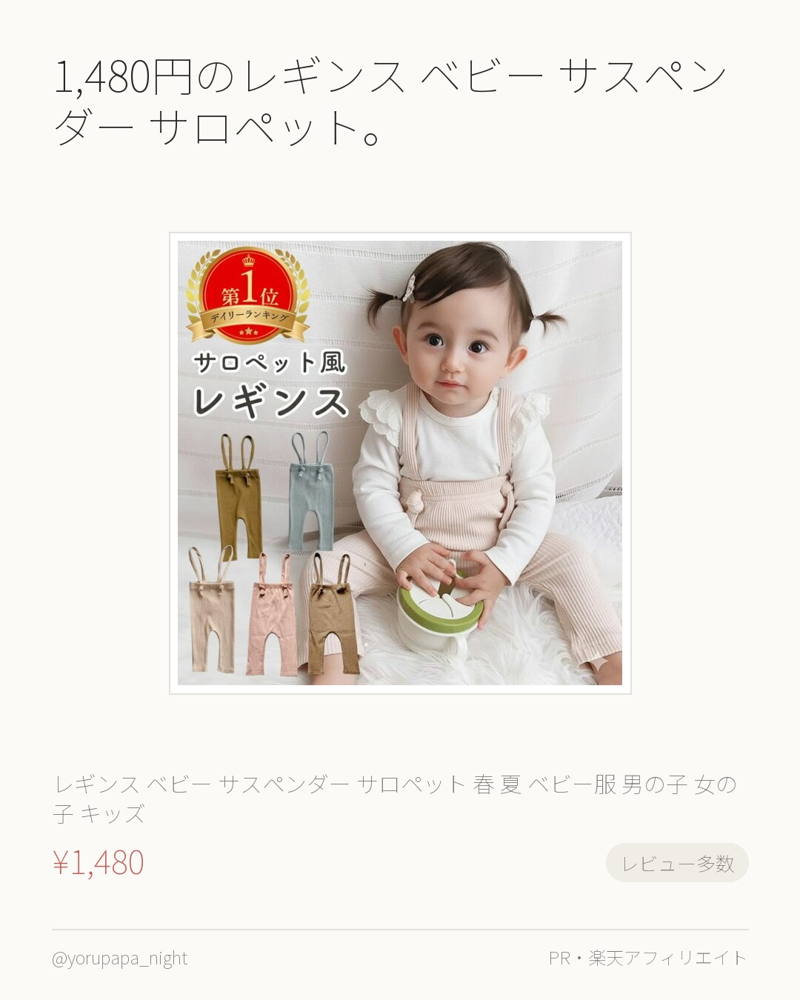
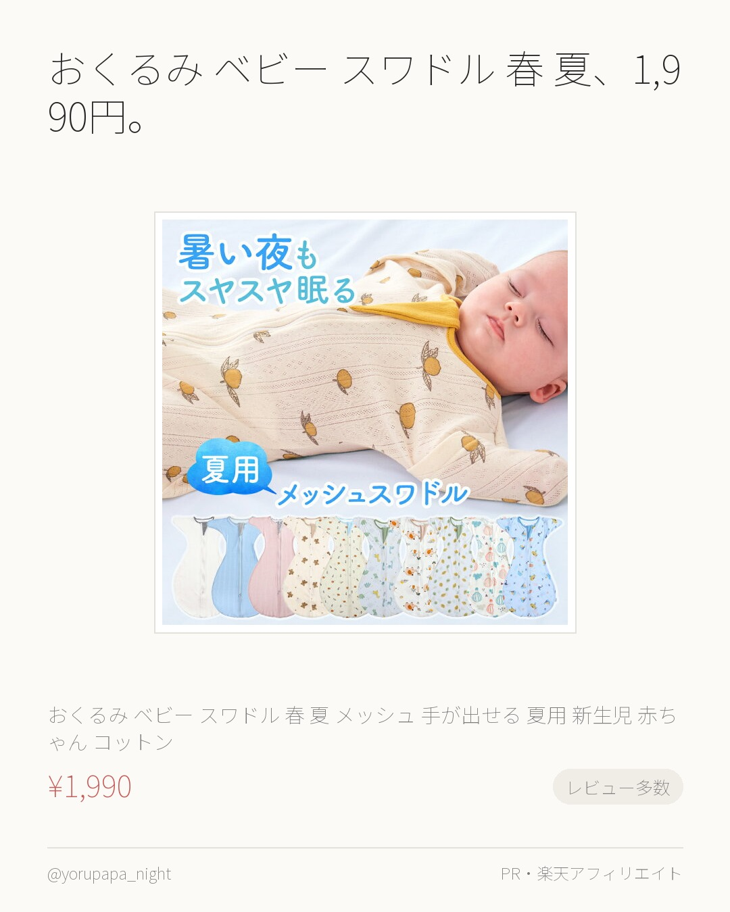
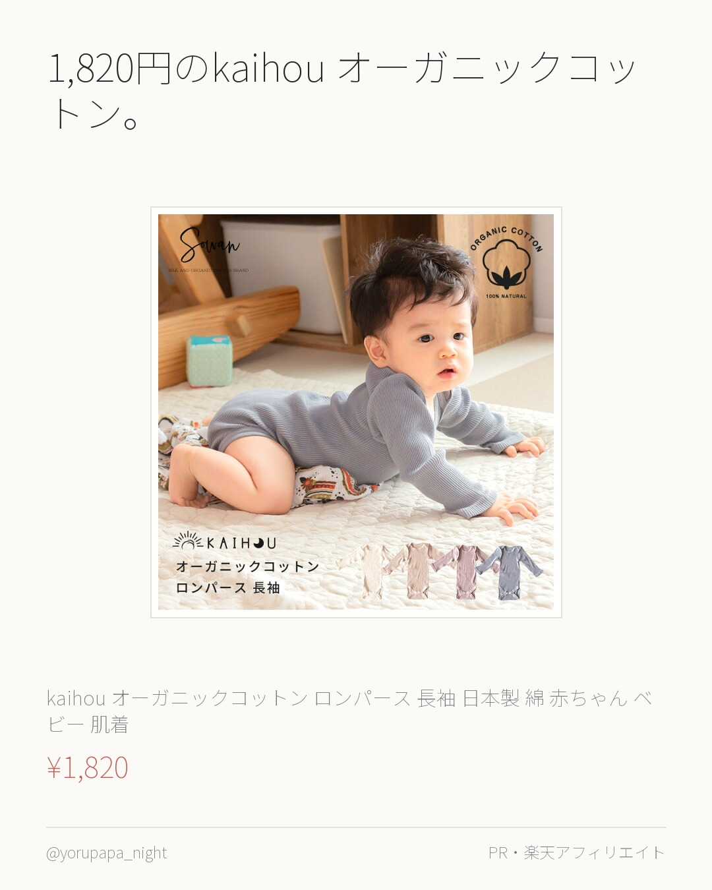
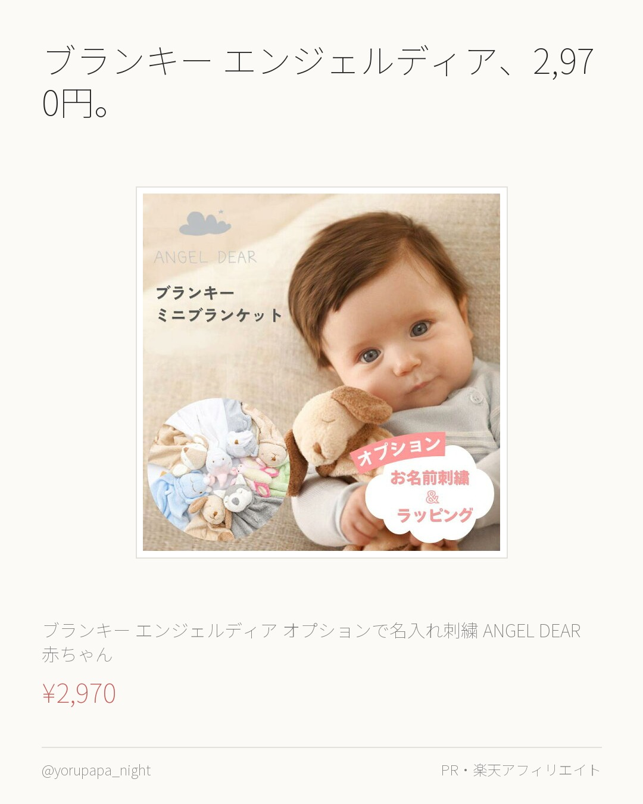

おくるみ ガーゼ 退院 赤ちゃん 秋冬が1,380円。レビュー6,604件で4.71なのが決め手でした。使い回しが効きそう。
おくるみ ガーゼ 退院 赤ちゃん 秋冬 ベビー 新生児 ガーゼケット 生地 かわいい 二重 おくるみガーゼ 秋 夏 退院着 冬 ガーゼおくる
¥1,380
楽天市場で見るよるぱぱ｜日中は会社員、夜と休日は育児担当。実際に使ったものだけ。
これまでの投稿をぜんぶ見る → 楽天ROOM／よるぱぱ
おくるみ ガーゼ 退院 赤ちゃん 秋冬が1,380円。レビュー6,604件で4.71なのが決め手でした。使い回しが効きそう。
おくるみ ガーゼ 退院 赤ちゃん 秋冬 ベビー 新生児 ガーゼケット 生地 かわいい 二重 おくるみガーゼ 秋 夏 退院着 冬 ガーゼおくる
¥1,380
楽天市場で見る
探してたやつ。2重ガーゼ おくるみ ガーゼ 新生児。レビュー906件で4.71なのが決め手でした。色違いも見てみてください。
【1280円→1088円クーポン使用で 9/13 23:59迄】 2重ガーゼ おくるみ ガーゼ 新生児 出産準備 ダブルガーゼ ガーゼケット
¥1,280
楽天市場で見る
日本製 春夏 夏用 tubutubuネップが3,030円。レビュー4.81（251件）なのが決め手でした。使い回しが効きそう。
【帽子付き】日本製 春夏 夏用 tubutubuネップ スワドル 綿100％ すわどる すわドル ベビー 赤ちゃん あかちゃん オールシーズ
¥3,030
楽天市場で見る
1,520円のレギンス ベビー 韓国 ベビー服。レビュー537件で4.69なのが決め手でした。使い回しが効きそう。
レギンス ベビー 韓国 ベビー服 サルエル風 リブレギンス pino: ナチュラル 韓国 ベビー服 女の子 新生児 男の子 赤ちゃん 韓国ベ
¥1,520
楽天市場で見る
探してたやつ。BRILBE 刺繍入り スリーパー 秋 冬。レビュー1,304件で4.61なのが決め手でした。迷ってるならまずこれから。
BRILBE 刺繍入り スリーパー 秋 冬 ベビー キッズ フランネル 内側 ガーゼスリーパー フリース 冬用 軽くてあったか フリース 赤
¥2,650
楽天市場で見る
スリーパー ベビー キッズサイズ 春 秋が1,998円。レビュー4.69（499件）なのが決め手でした。使い回しが効きそう。
スリーパー ベビー キッズサイズ 【一年中使えるほどよい厚さのスリーパー】春 秋 冬用 冬 冷房対策 通年 6重ガーゼ シンプルで可愛いデザ
¥1,998
楽天市場で見る
1,480円のレギンス ベビー サスペンダー サロペット。レビュー1,339件で4.6なのが決め手でした。使い回しが効きそう。
レギンス ベビー サスペンダー サロペット 春 夏 ベビー服 男の子 女の子 キッズ 保育園 子供 子供服 ベビーレギンス 60 70 赤ち
¥1,480
楽天市場で見る
おくるみ ベビー スワドル 春 夏、1,990円。レビュー1,723件で4.55なのが決め手でした。使い回しが効きそう。
おくるみ ベビー スワドル 春 夏 メッシュ 手が出せる 夏用 新生児 赤ちゃん コットン バンブー モロー反射 布団 通年 寝かしつけ ス
¥1,990
楽天市場で見る
1,820円のkaihou オーガニックコットン。レビュー4.67（353件）なのが決め手でした。色違いも見てみてください。
kaihou(カイホウ) オーガニックコットン ロンパース 長袖 日本製 綿100％ 赤ちゃん ベビー 肌着 出産準備 出産祝い 新生児 韓
¥1,820
楽天市場で見る
ブランキー エンジェルディア、2,970円。レビュー4.77（162件）なのが決め手でした。色違いも見てみてください。
ブランキー エンジェルディア オプションで名入れ刺繍 ANGEL DEAR 赤ちゃん ぬいぐるみ付き ベビータオル ミニサイズ 新生児 寝か
¥2,970
楽天市場で見る